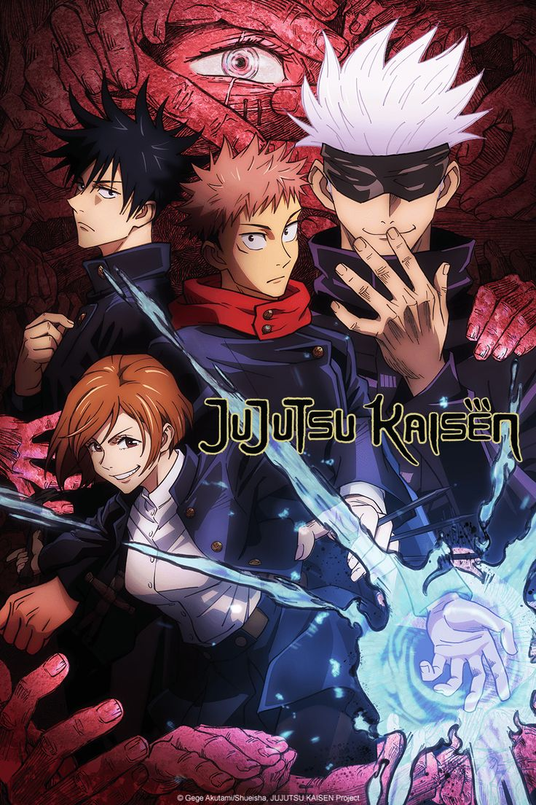

Summary:
Yuji Itadori, a kind-hearted teenager, joins his school's Occult Club for fun, but discovers that its members are actual sorcerers who can manipulate the energy between beings for their own use. He hears about a cursed talisman - the finger of Sukuna, a demon - and its being targeted by other cursed beings.